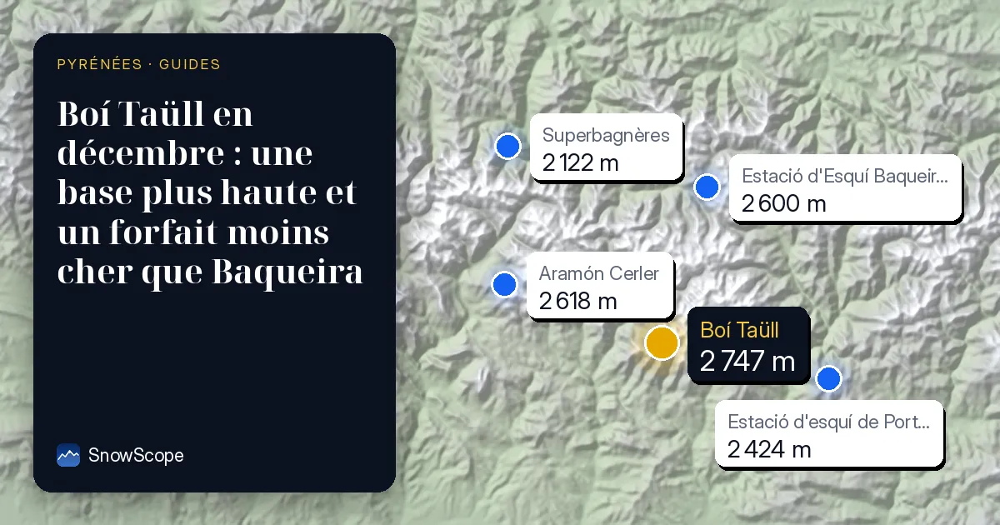

Boí Taüll en décembre : une base plus haute et un forfait moins cher que Baqueira
Pour un séjour au ski économique en décembre en Espagne, Boí Taüll offre une altitude de départ plus élevée et un forfait journalier moins cher que Baqueira Beret. Ses remontées commencent à 2 039 m avec un forfait adulte 1 jour à 49,00 EUR, contre une base à 1 504 m et un forfait à 74,00 € pour Baqueira Beret. Malgré tout, la neige de début décembre est un pari, alors le timing compte.
Consultez les prévisions neige en temps réel pour Boí Taüll sur l'application SnowScopeHauteurs de neige, alertes poudreuse et carte 3D, gratuitement.
Départ en altitude à 2 039 m
Une base haute, c'est moins de risque de marcher sur l'herbe jusqu'à la première remontée, et aucune station de notre liste pyrénéenne ne commence plus haut. Le domaine cartographié de Boí Taüll va de 2 039 m à 2 747 m, avec 708 m de dénivelé, 35 km de pistes et 9 remontées. La première neige durable arrive en général le 9 novembre en bas, le 4 novembre à mi-pente (2 393 m) et le 3 novembre au sommet.
L'estimation de neige actuelle au 13 novembre montre un début calme : 0 cm à la base et 5 cm à mi-montagne et au sommet, avec 0 cm, 4 cm et 6 cm de neige fraîche au cours des 7 prochains jours. Du 13 au 26 novembre, la prévision sur deux semaines oscille entre 13 et 36 cm à mi-montagne et plus haut, sans jamais être une promesse.

Probabilités de neige semaine par semaine en décembre
D'après notre historique de neige sur 46 hivers passés (1980-81 à 2025-26), décembre commence doucement. À la base de 2 039 m, un mois de décembre habituel affiche une moyenne de 16 cm (17 cm le 15 décembre), moins de 1 cm lors d'un hiver pauvre (1 sur 10) et plus de 52 cm lors d'un hiver riche. À mi-montagne (2 393 m), la moyenne est de 25 cm (24 cm le 15 décembre ; pauvre en dessous de 3 cm, riche au-dessus de 71 cm), tandis que le sommet à 2 747 m affiche une moyenne de 34 cm (32 cm le 15 décembre ; pauvre en dessous de 4 cm, riche au-dessus de 90 cm).
Semaine après semaine, les dates tardives sont payantes. Du 1er au 7 décembre, 30 cm ou plus surviennent dans 15 % des hivers passés à la base, 35 % à mi-montagne et 41 % au sommet (50 cm ou plus : 2 %, 11 %, 20 %). Du 8 au 14 décembre, 30 cm ou plus atteignent 24 %, 41 % et 43 % (50 cm ou plus : 9 %, 17 %, 30 %). Du 15 au 21 décembre, ces probabilités de 30 cm ou plus montent à 30 %, 48 % et 57 % (50 cm ou plus : 9 %, 22 %, 37 %). Du 22 au 28 décembre, 30 cm ou plus atteignent 39 %, 54 % et 63 %, avec 50 cm ou plus dans 15 %, 33 % et 46 %.
Le prix du forfait
Sur le site officiel de Boí Taüll, un forfait adulte (25-64 ans) 1 jour coûte 49,00 EUR. Les forfaits multi-jours et l'hébergement n'ont pas été vérifiés, utilisez donc ce tarif journalier pour planifier et consultez le site officiel avant de réserver. Pour 35 km de pistes balisées, cela maintient les coûts de remontées à un niveau modeste.
Face à Baqueira Beret
Baqueira Beret est plus grand, avec 154 km de pistes balisées, 36 remontées et 1 096 m de dénivelé entre 1 504 m et 2 600 m. Sur son site officiel pour 2026-27, un 'Baqueira Ticket' adulte 1 jour est à 74,00 € (70,00 € avec la carte rechargeable 'Baqueira Pass'), et un 'Baqueira Ticket' 6 jours est à 359,00 €. Le forfait à 49,00 EUR de Boí Taüll permet de réduire les coûts journaliers.
Concernant la neige de décembre, la hauteur de Boí Taüll bat Baqueira Beret à tous les niveaux. La base de 1 504 m de Baqueira Beret affiche une moyenne de 8 cm (9 cm le 15 décembre ; 0 cm lors d'un hiver pauvre, plus de 37 cm lors d'un hiver riche), avec 30 cm ou plus dans 4 %, 11 %, 15 % et 20 % des cas sur les quatre semaines de décembre. Sa mi-montagne à 2 052 m affiche une moyenne de 20 cm (19 cm le 15 décembre ; pauvre en dessous de 2 cm, riche au-dessus de 56 cm), avec 30 cm ou plus dans 22 %, 30 %, 35 % et 41 %. À 2 600 m, la moyenne est de 30 cm (30 cm le 15 décembre ; pauvre en dessous de 3 cm, riche au-dessus de 77 cm), atteignant 30 cm ou plus dans 39 %, 46 %, 52 % et 59 %, et 50 cm ou plus dans 13 %, 22 %, 30 % et 37 %.
L'hiver dernier et la vision à long terme
Le mois de décembre de l'hiver dernier (2025-26) a été pauvre à Boí Taüll, avec une moyenne de 9 cm à la base, 14 cm à mi-montagne et 19 cm au sommet. Dans notre historique, décembre a varié de 2016-17 (1 cm à la base, 2 cm à mi-montagne et au sommet) à 2021-22 (67 cm, 94 cm et 121 cm). Les hivers habituels culminent à 77 cm, 109 cm et 154 cm sur 142, 162 et 167 jours de neige.
Comparer les 15 premiers hivers (1980-81 à 1994-95) avec les 15 derniers (2011-12 à 2025-26) montre une légère baisse des valeurs moyennes de décembre : de 15 cm à 12 cm à la base, de 22 cm à 20 cm à mi-montagne et de 30 cm à 28 cm au sommet. Le début du mois de décembre reste incertain, alors skiez en altitude et choisissez des semaines plus tardives.
Conseils aux skieurs
- Visez la période du 15-21 décembre ou du 22-28 décembre, où le sommet à 2 747 m atteint 30 cm ou plus dans 57 % et 63 % des hivers passés, au lieu de 41 % du 1er au 7 décembre.
- Skiez entre mi-montagne (2 393 m) et le sommet (2 747 m), où les épaisseurs habituelles en décembre sont de 25 cm et 34 cm au lieu de 16 cm à la base.
- Réservez votre forfait adulte (25-64 ans) 1 jour à 49,00 EUR sur le site officiel de Boí Taüll et vérifiez-y les tarifs multi-jours.
- Lisez la bulletin d'avalanches chaque matin avant de sortir des pistes, surtout après des tempêtes au-dessus de 2 393 m.
Autres cartes (sites externes)
Références et crédits
- Boí Taüll, official lift pass prices (tarifes) pirineu365.cat/boitaull/estacio/tarifes/
- Baqueira Beret, official prices (tarifas), season 26-27 www.baqueira.es/es/tarifas
- SnowScope, December snow at three heights and today's snow map snowscope.app/
À propos de ces chiffres
Chiffres de neige : historique SnowScope, 46 hivers passés (1980-81 à 2025-26) à trois altitudes de chaque station (un modèle du passé corrigé de l'altitude : une estimation pour une zone, pas des mesures de la station) ; chiffres de décembre calculés à partir des hauteurs quotidiennes de ces hivers. Neige actuelle et tendance à deux semaines : prévisions SnowScope (tendance ECMWF et GFS, une fourchette, pas une promesse). Remontées et pistes : cartographie OpenSkiMap. Prix : pages officielles des stations ci-dessous, lues le 2026-11-13 ; les prix peuvent changer, vérifiez avant de réserver.
Bulletins d'avalanche officiels: ICGC – Butlletí de perill d'allaus (Catalunya)
Citer ce bulletin
Pour la recherche, l'enseignement ou la presse : chiffres et graphiques réutilisables librement sous CC BY 4.0 avec cette citation.
SnowScope (2026), Boí Taüll en décembre : une base plus haute et un forfait moins cher que Baqueira, https://snowscope.app/blog/fr/2026/11/boi-taull-december-ski-highest-pyrenees-base-2026.html, consulté le 2026-11-14
SnowScope (Atlas Labs). (2026, November 14). Boí Taüll en décembre : une base plus haute et un forfait moins cher que Baqueira. SnowScope snow reports. https://snowscope.app/blog/fr/2026/11/boi-taull-december-ski-highest-pyrenees-base-2026.html
BibTeX
@misc{snowscope2026boitaulldecemberskihighe,
author = {{SnowScope (Atlas Labs)}},
title = {Boí Taüll en décembre : une base plus haute et un forfait moins cher que Baqueira},
year = {2026},
month = nov,
howpublished = {\url{https://snowscope.app/blog/fr/2026/11/boi-taull-december-ski-highest-pyrenees-base-2026.html}},
note = {Published 2026-11-14 20:01 UTC; accessed 2026-11-14}
}· CC BY 4.0 · Méthodes, données et outils →
Boí Taüll : neige et température selon l'altitude, cet hiver vs l'hiver dernier (outils) →
Suivre Boí Taüll
Gratuit : un message quand la neige arrive, et la météo chaque matin.